✣
Pulpo 1 · Multitareas
Motor de oportunidades e ingresosOrquesta tareas productivas, servicios digitales, generación de activos y flujos de trabajo autónomos.
MisionesServiciosActivos digitales
Módulo diseñado · integración pendiente

Arquitectura modular · Seis Pulpos · Operaciones
Arquitectura visual de los módulos de negocio y operación de Colmena.
Orquesta tareas productivas, servicios digitales, generación de activos y flujos de trabajo autónomos.
Seguimiento de oportunidades y carteras con límites, aprobación humana, trazabilidad y controles de riesgo.
Gestión de productos, proveedores, campañas, enlaces de afiliado y seguimiento de conversiones.
Supervisa clientes, contratos, facturas, tareas administrativas, evidencias y cumplimiento.
Espacio para nuevas unidades de negocio, servicios especializados y productos SaaS independientes.
Panel de control global, permisos, presupuestos, políticas, alertas y coordinación entre Pulpos.